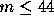

| John's trip |
Little Johnny has got a new car. He decided to drive around the town to visit his friends. Johnny wanted to visit all his friends, but there was many of them. In each street he had one friend. He started thinking how to make his trip as short as possible. Very soon he realized that the best way to do it was to travel through each street of town only once. Naturally, he wanted to finish his trip at the same place he started, at his parents' house.
The streets in Johnny's town were named by integer numbers from 1 to n, n < 1995. The junctions were independently named by integer numbers from 1 to m,  . All junctions in the town had different numbers. Each street was connecting exactly two (not necessarily different) junctions. No two streets in the town had the same number. He immediately started to plan his round trip. If there was more than one such round trip, he would have chosen the one which, when written down as a sequence of street numbers is lexicographically the smallest.
But Johnny was not able to find even one such round trip. Help Johnny and write a program which finds the desired shortest round trip. If the round trip does not exist the program should write a message. Assume that Johnny lives at the junction ending the 1st street input with smaller number. All streets in the town are two way. There exists a way from each street to another street in the town. The streets in the town are very narrow and there is no possibility to turn back the car once he is in the street.
Input file consists of several blocks. Each block describes one town. Each line in the block contains three integers x, y, z, where x > 0 and y > 0 are the numbers of junctions which are connected by the street number z. The end of the block is marked by the line containing x = y = 0. At the end of the input file there is an empty block, x = y = 0.
The output file consists of 2 line blocks corresponding to the blocks of the input file. The first line of each block contains the sequence of street numbers (single members of the sequence are separated by space) describing Johnny's round trip. If the round trip cannot be found the corresponding output block contains the message ``Round trip does not exist.''. The second line of each block is empty.
1 2 1 2 3 2 3 1 6 1 2 5 2 3 3 3 1 4 0 0 1 2 1 2 3 2 1 3 3 2 4 4 0 0 0 0
1 2 3 5 4 6 Round trip does not exist.